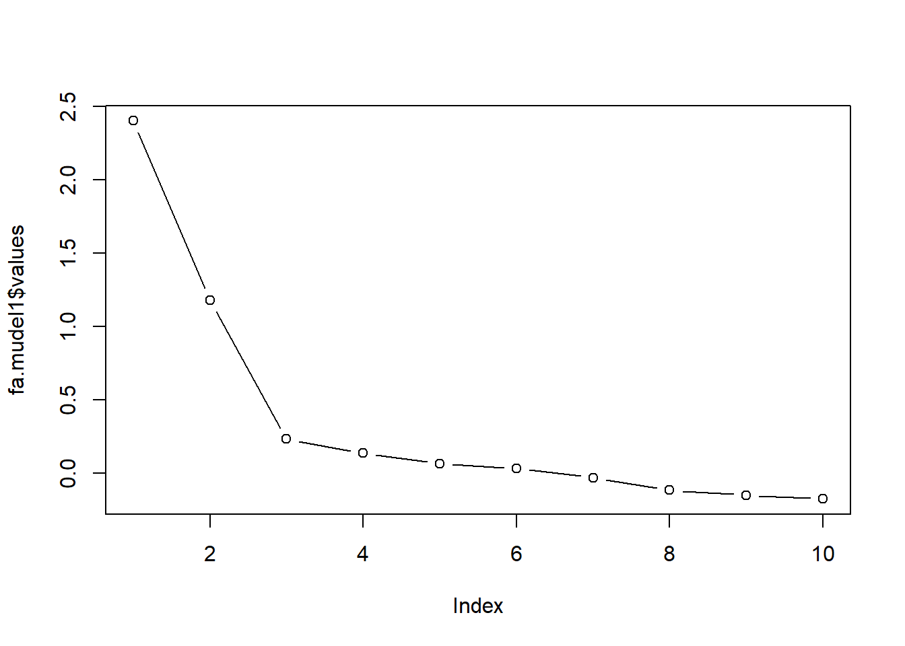
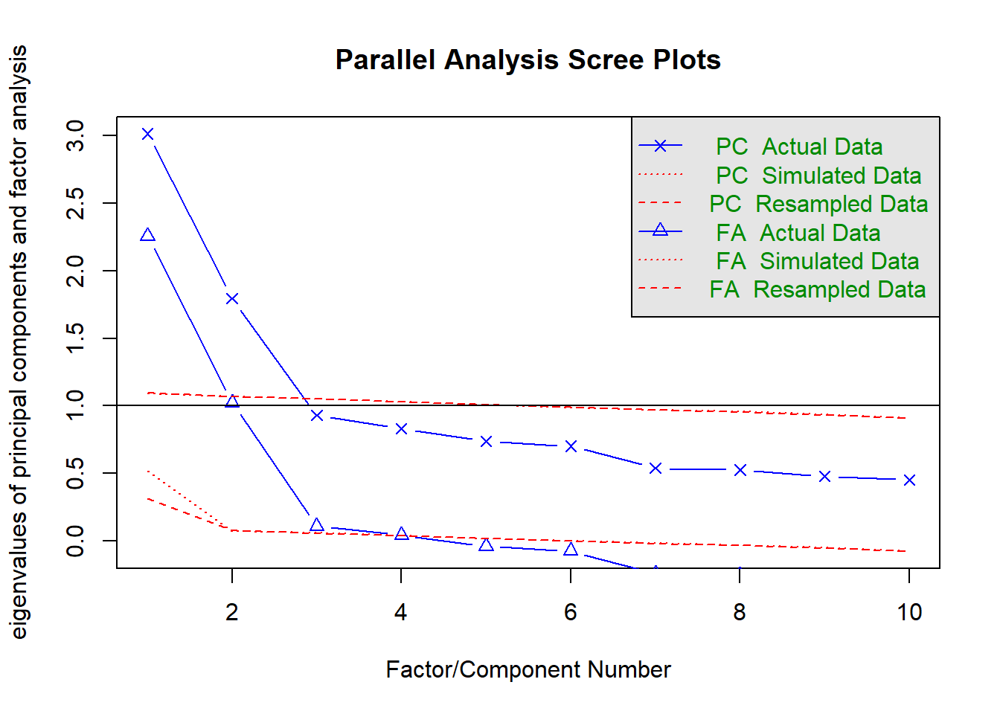
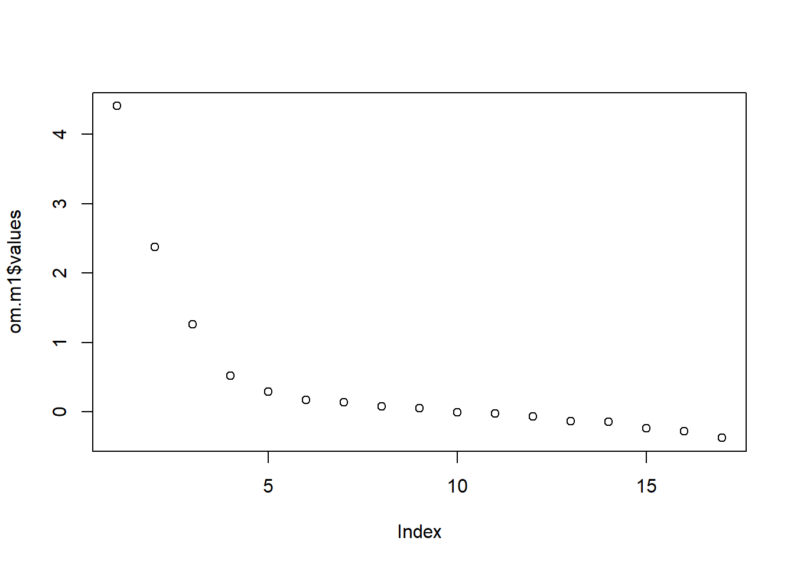
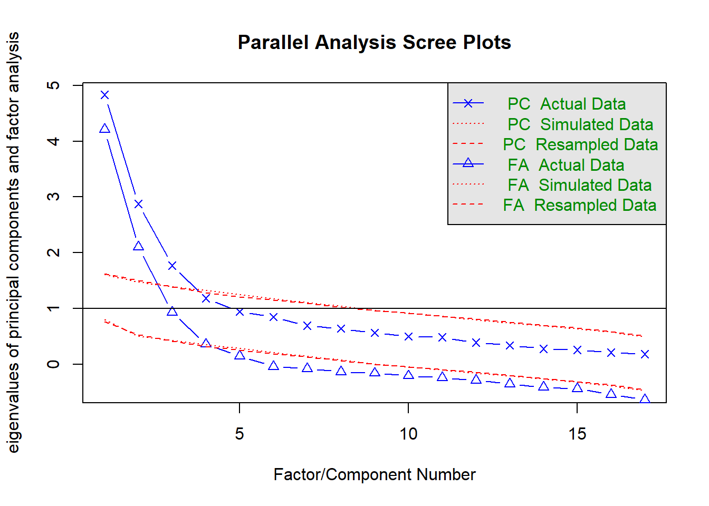

Nagu ilmselt teate, on olemas 2 lähedast meetodit: faktoranalüüs ja peakomponentide analüüs. Mõlema eesmärgiks on taandada suurem muutujatekogum väikseks arvuks liitmuutujateks. Sageli annavad mõlemad sarnase lõpptulemuse, kuid vahel võivad meetodite tulemused ka erineda.
Faktoranalüüsi eesmärk on kirjeldada mingit suuremat hulka tunnuseid väiksema arvu hüpoteetiliste tunnuste ehk faktorite kaudu.
Peakomponentide analüüsi eesmärk on välja selgitada väiksem hulk komponente, mis vastutavad esialgsete muutujate varieeruvuse eest.
Faktoranalüüs ja peakomponentide analüüs on matemaatilises mõttes erinevad. Faktoranalüüsi käigus eeldatakse, et mõõdetud muutujate varieeruvuse eest vastutavad tekkivad ühisfaktorid ja unikaalsed faktorid. Peakomponentide analüüsi käigus tekitatakse uued muutujad lihtsalt kui lineaarkombinatsioonid mõõdetud muutujatest (vaadake loengu konspektist jooniseid). Faktoranalüüsi on mõistlik kasutada, kui uurija on huvitatud faktoritest, mis vastutavad teatud hulga mõõdetud muutujate varieeruvuse eest. Peakomponentide analüüsi tuleks kasutada, kui uurija soovib lihtsalt andmeid taandada.
Faktoranalüüsi tegemiseks on R-is vähemalt paar erinevat võimalust. Antud praktikumis kasutame lisamooduli psych faktoranalüüsi funktsioone. Installime kõigepealt vajalikud lisamoodulid psych ja GPArotation (see on vajalik faktormudeli pööramiseks).
install.packages("psych")
install.packages("GPArotation")library(psych)
library(GPArotation)Vaatame alustuseks suheliselt lihtsat faktormudelit, mille puhul teame, et sellel on 2-faktoriline struktuur. Laadige R’i andmestik nimega bfi.
bfi <- read.csv("KMKT/6praktikum/bfi.csv")See andmestik on kaasas lisamooduliga psych. Tegemist on 2800 inimese vastustega 25-le Suure Viisiku isiksuseomadusi puudutavele väitele. Väited ise on ära toodud tabelis nimega bfi.dictionary. (Lisamoodulis paiknevaid näidisandmestikke pole RStudio Environment-paneelis näha, aga neid saab näha kirjutades tabeli nime konsoolile.) Jätame alles kümne esimese väite andmed, mis puudutavad kahte isiksuseomadust: sotsiaalsust ja meelekindlust.
bfi2 <- bfi[,1:10]Faktoranalüüsi alguspunktiks on analüüsi kaasatavate muuutjate vaheliste korrelatsioonide maatriks. Mõistliku faktorlahendi eelduseks on paraja tugevusega korrelatsioonide kogumid maatriksis. See tähendab, et muutujad, mis seostuvad teistega liiga nõrgalt või liiga tugevalt, võivad osutuda probleemseks. Bartletti test näitab, kas maatriksis on liiga palju nõrku korrelatsioone. (Täpsemalt öeldes võrdleb see korrelatsioonimaatriksit sellise maatriksiga, millel on väljaspool peadiagonaali nullid.) Bartletti testi saab kasutada psych mooduli funktsiooni cortest.bartlett abil.
cortest.bartlett(bfi2)## R was not square, finding R from data## $chisq
## [1] 5664.893
##
## $p.value
## [1] 0
##
## $df
## [1] 45Praegusel juhul on p-väärtus alla 0.05. P-väärtus üle 0.05 näitab probleeme nõrkade korrelatsiooniseoste rohkusega. Sellisel juhul tuleks vaadata korrelatsioonimaatriksit ennast ning katsuda üles leida muutujad, mille puhul esineb vaid üksikuid korrelatsioone väärtusega üle 0.3-e. Nende muutujate puhul tuleks kaaluda faktoranalüüsist välja jätmist. Korrelatsioonimaatriksi saab funktsiooni cor abil (mille argument use=“complete” jätab arvutustest välja puuduvate väärtustega andmeread). Funktsioon round selle ümber aitab ümmardada korrelatsioonikordajad kahe komakohani.
bfi2matrix <- round(cor(bfi2, use="complete"), 2)
bfi2matrix## A1 A2 A3 A4 A5 C1 C2 C3 C4 C5
## A1 1.00 -0.34 -0.27 -0.15 -0.18 0.02 0.01 -0.02 0.12 0.05
## A2 -0.34 1.00 0.49 0.34 0.39 0.10 0.13 0.19 -0.15 -0.12
## A3 -0.27 0.49 1.00 0.36 0.51 0.10 0.14 0.12 -0.12 -0.15
## A4 -0.15 0.34 0.36 1.00 0.31 0.10 0.23 0.13 -0.16 -0.25
## A5 -0.18 0.39 0.51 0.31 1.00 0.13 0.11 0.13 -0.12 -0.17
## C1 0.02 0.10 0.10 0.10 0.13 1.00 0.44 0.32 -0.35 -0.26
## C2 0.01 0.13 0.14 0.23 0.11 0.44 1.00 0.37 -0.39 -0.30
## C3 -0.02 0.19 0.12 0.13 0.13 0.32 0.37 1.00 -0.35 -0.35
## C4 0.12 -0.15 -0.12 -0.16 -0.12 -0.35 -0.39 -0.35 1.00 0.48
## C5 0.05 -0.12 -0.15 -0.25 -0.17 -0.26 -0.30 -0.35 0.48 1.00Korrelatsioonimaatriksi determinandi abil saame uurida vastupidise probleemi ehk liiga tugevate korrelatsioonide esinemist.
det(bfi2matrix)## [1] 0.1243472Probleeme multikollineaarsusega (ehk liiga tugevate muuutjate vaheliste seostega) näitab determinandi väärtus alla \(0.00001-e\) (ehk \(10^{-5}\)). Kui probleemne multikollineaarsus siiski kinnitust leiab, tuleks korrelatsioonimaatriksist üles otsida kordajad üle 0.9 ja üks vastavatest muutujatest välja jätta. Vahel võib probleeme valmistada ka olukord, kus 3 muutujat korreleeruvad kõik omavahel 0.6 kanti.
Faktoranalüüsi siseselt olemas erinevaid faktorite leidmise meetode. Üheks peamiseks valikukriteeriumiks võiks olla, kas me soovime üldistada leitavat faktorstruktuuri suuremale populatsioonile (eeldusel, et meie valim koosneb populatsioonist juhuslikult valitud inimestest) või piirduda ainult selle valimiga, mille peal arvutusi tegema hakkame. Populatsioonile üldistamist võimaldavatest on tuntuim suurima tõepära (maximum likelihood) meetod. Kui üldistamise vajadust pole, võib kasutada peatelgede meetodi (principal axis) või eelmainitud peakomponentide analüüsi. Peatelgede meetodi soovitatakse eelistada ka siis, kui analüüsi kaasatavates andmetes esineb normaaljaotusest kõrvalekalduvaid muutujaid.
Teeme psych mooduli funktsiooni fa abil 2-faktorilise mudeli kasutades faktorite leidmiseks suurima tõepära meetodi ja faktorite pööramiseks varimax-meetodi. Laseme välja arvutada ka faktorskoorid. Salvestame mudeli nimega fa.mudel1.
fa.mudel1 <- fa(bfi2, nfactors=2, rotate="varimax", fm="ml", scores=TRUE)Funktsiooni fa esimeseks argumendiks on tabeli nimi, milles paiknevad toorandmed. ülejäänud funktsiooni fa argumendid tähendavad järgmist:
Faktoranalüüsile võib toorandmete asemel ette anda ka korrelatsioonimaatriksi ja osalejate arvu (st toorandmete ridade arvu). See variant tuleb kasuks väga suurte andmestike korral (rohkem kui 100 000 rida), mille puhul toorandmetega faktoranalüüs võib kujuneda üsna ajamahukaks. Kuna me oleme eelnevalt salvestanud korrelatsioonimaatriksi nimega “bfi2matrix”“, siis praegusel juhul annaks allolev koodirida sama tulemuse kui ülaltoodud. Selle lähenemise puuduseks on aga, et vastajate kohta ei saa arvutada faktorskoore, mis näitavad vastaja asukohta faktoril ja mida on võimalik kasutada mingites edasistes arvutustes.
#Faktoranalüüs korrelatsioonimaatriksiga
fa.mudel1.maatriksiga <- fa(bfi2matrix, n.obs=2800, nfactors=2, rotate="varimax", fm="ml")Peakomponentide analüüsi saab teha funktsiooni principal abil. Selle argumendid on samad mis funktsioonil fa (välja arvatud puuduv faktorite leidmise meetodi argument fm). Ülaltoodud faktoranalüüsi mudelile analoogse peakomponentide mudeli saaksime teha nii:
pc.mudel1 <- principal(bfi2, nfactors=2, rotate="varimax", scores=TRUE)Faktormudeli fa.mudel1 väljundi saame kätte sellesama nime abil. Samas on ehk natuke kavalam kasutada funktsiooni print.psych, millele saame argumendi cut abil anda piirväärtuse, millest väiksemad faktorlaadungid ära peidetakse. Mitteoluliste laadungite peitmine teeb faktormudeli tõlgendamise reeglina lihtsamaks. Peidame ära 0.3-st väiksemad laadungid. Samuti saame argumendi sort=TRUE abil reastada laadungid faktorite siseselt suuruse järgi.
print.psych(fa.mudel1, cut=0.3, sort=TRUE)## Factor Analysis using method = ml
## Call: fa(r = bfi2, nfactors = 2, rotate = "varimax", scores = TRUE,
## fm = "ml")
## Standardized loadings (pattern matrix) based upon correlation matrix
## item ML2 ML1 h2 u2 com
## C4 9 -0.65 0.43 0.57 1.0
## C2 7 0.61 0.39 0.61 1.0
## C5 10 -0.57 0.35 0.65 1.1
## C1 6 0.55 0.30 0.70 1.0
## C3 8 0.54 0.30 0.70 1.1
## A3 3 0.75 0.57 0.43 1.0
## A2 2 0.65 0.44 0.56 1.1
## A5 5 0.62 0.39 0.61 1.1
## A4 4 0.46 0.26 0.74 1.4
## A1 1 -0.38 0.15 0.85 1.0
##
## ML2 ML1
## SS loadings 1.80 1.78
## Proportion Var 0.18 0.18
## Cumulative Var 0.18 0.36
## Proportion Explained 0.50 0.50
## Cumulative Proportion 0.50 1.00
##
## Mean item complexity = 1.1
## Test of the hypothesis that 2 factors are sufficient.
##
## The degrees of freedom for the null model are 45 and the objective function was 2.03 with Chi Square of 5664.89
## The degrees of freedom for the model are 26 and the objective function was 0.17
##
## The root mean square of the residuals (RMSR) is 0.04
## The df corrected root mean square of the residuals is 0.05
##
## The harmonic number of observations is 2762 with the empirical chi square 403.51 with prob < 2.4e-69
## The total number of observations was 2800 with Likelihood Chi Square = 464.04 with prob < 9.2e-82
##
## Tucker Lewis Index of factoring reliability = 0.865
## RMSEA index = 0.078 and the 90 % confidence intervals are 0.071 0.084
## BIC = 257.67
## Fit based upon off diagonal values = 0.98
## Measures of factor score adequacy
## ML2 ML1
## Correlation of (regression) scores with factors 0.85 0.87
## Multiple R square of scores with factors 0.72 0.75
## Minimum correlation of possible factor scores 0.44 0.50Väljundis on esimesena näha faktorlaadungite tabel (Standardized loadings…). Laadung näitab väite ja faktori vahelise korrelatsioonikordaja väärtust (kaldnurkse pööramise korral regressioonikordaja). Iga väite/muutuja puhul tuleks vaadata, millisele faktorile see tugevalt laadub. Rusikareegilina võib oluliseks pidada laadungit absoluutväärtusega \(0.3-0.4\) (sõltuvalt valimi suurusest). Seejärel tuleks faktoreid tõlgendada. Faktorite tähendus moodustub neile tugevalt laaduvatest muutujatest. Mis on ühele faktorile tugevalt laaduvate muutujate ühisosa? Antud juhul näeme, et sotsiaalsusega seotud väidete (tunnused A1-A5) suuremad laadungid ongi koondunud ühte faktorisse ja meelekindluse väited (C1-C5) teise faktorisse. Mida suurem laadungi absoluutväärtus, seda olulisem on muutuja faktori tõlgendamisel. Arvesse tuleks võtta ka faktorlaadungi märki. Nt väide A1 seostub faktoriga negatiivselt (tabelist bfi.dictionary võib näha, et väite sisu on Am indifferent to the feelings of others), samas kui nt A2 (Inquire about others’ well-being) seostub faktoriga positiivselt. Sarnane on lugu ka meelekindluse väidete puhul. Väited C4 (Do things in a half-way manner) ja C5 (Waste my time) seostuvad faktoriga negatiivselt, samas kui ülejäänud väited positiivselt.
Lisaks laadungitele on tabeli paremas servas veel paar tulpa. Tulbas nimega h2 paiknevad kommunaliteedid, mis näitavad kui suure osa muutuja variatiivususest faktorid summaarselt ära kirjeldavad. Kui mõne väite kommunaliteet on teistest oluliselt väiksem, tasub kaaluda selle analüüsist välja jätmist, kuna pole teistega lineaarselt seotud. Tulbas u2 olevad arvud näitavad iga muutuja unikaalse variatiivsuse hulka (st nad on see osa tunnuse varitiivsusest, mis kommunaliteedist üle jääb). Funktsiooni fa väljundis on laadungite tabelil veel üks tulp com (ehk complexity, keerukus). Näitaja iseloomustab faktorite arvu, mida antud faktorlahendis muutuja kirjeldamiseks vaja läheb. Allpool on ära toodud ka keskmine keerukus, mida saab kasutada erinevate faktormudelite võrdlemiseks. Kuna me tahame, et faktorstruktuur oleks võimalikult lihtne (st iga muutuja seostuks ainult ühe faktoriga), siis mida lähemal on keskmine keerukus 1-le, seda parem faktormudel.
Faktorlaadungite tabeli all näeme faktorite omaväärtusi (SS loadings ehk sum of squared loadings). Samuti näeme, kui suure osa andmete hajuvusest iga faktor seletab (Proportion Var) ja kui suure osa faktorite poolt seletatavast hajuvusest mingi faktor seletab(Proportion Explained). Lisaks on kaks viimast näitajat ära toodud ka kumulatiivselt. Kui tahame teada, kui suure osa andmete hajuvusest antud mudeli faktorid ära kirjeldavad, tuleks vaadata rea Cumulative var kõige parempoolsemat väärtust.
Omaväärtuste ja seletusprotsentide tabelist allapoole on ära toodud veel mudeli sobitusastme näitajad. Funktsiooni fa puhul on näitajaid oluliselt rohkem, kui funktsiooni principal puhul. Näitaja Fit based upon off diagonal values põhineb mudeli jääkide ja tegelike korrelatsioonide suhtelise suuruse võrlemisel. Jäägid kujutavad endast mudeli järgi taastatud korrelatsioonimaatriksi ja tegeliku korrelatsioonimaatriksi vahelisi erinevusi. Antud näitaja on saadud jagades jääkide ruutsumma tegelike korrelatsioonide ruutsummaga ja lahutades saadud arvu 1-st. Väärtused üle 0.95-e näitavad mudeli head sobitusastet.
Pööramise eesmärgiks on saavutada võimalikult lihtne faktorstruktuur, kus iga muutuja laaduks tugevalt ainult ühele faktorile ja teistele nõrgalt. Matemaatiliselt pööramine faktorlahendi põhiolemust ei muuda: summaarne seletusprotsent ja tunnuste kommunaliteedid jäävad samaks. Kuid faktorlahend muutub lihtsamini tõlgendatavaks ja omaväärtused jaotuvad faktorite vahel ühtlasemalt. Teeme uue faktormudeli, mille jätame pööramata ja vaatame praegu ainult selle laadungeid.
fa.mudel2 <- fa(bfi2, nfactors=2, rotate="none")
fa.mudel2$loadings##
## Loadings:
## MR1 MR2
## A1 -0.262 -0.285
## A2 0.552 0.396
## A3 0.589 0.465
## A4 0.472 0.176
## A5 0.508 0.340
## C1 0.418 -0.364
## C2 0.511 -0.374
## C3 0.469 -0.292
## C4 -0.534 0.371
## C5 -0.507 0.288
##
## MR1 MR2
## SS loadings 2.40 1.180
## Proportion Var 0.24 0.118
## Cumulative Var 0.24 0.358Nagu näha laaduvad pea kõik väited kõige tugevamalt esimesele faktorile ja samuti kalduvad mitmed väited laaduma üsna võrdselt mõlemale faktorile. Sellist olukorda on keeruline tõlgendada.
Eristatakse kahte tüüpi pööramist: ortogonaalset ehk täisnurkset ja mitteortogonaalset ehk kaldnurkset. Enne pööramist on faktorid sõltumatud, nad ei ole omavahel korreleeritud. Ortogonaalne pööramine jätabki olukorra selliseks. Faktorite vahelised korrelatsioonid ei ole lubatud ja kõiki faktoreid pööratakse ühepalju. Kaldnurkse pööramise puhul on faktorite vahelised korrelatsioonid lubatud ja iga faktorit võib pöörata erineval määral. Otsus kumba pööramist eelistada, peaks tuginema eelkõige teoreetilistele kaalutlustele. Kui me eeldame, et faktorid peaksid olema üksteisest sõltumatud, tuleks eelistada ortogonaalset pööramist. Kui aga teooria ütleb, et faktorid on omavahel korreleeritud, on mõistlik valida kaldnurkne pööramine. Esimese mudeli puhul kasutasime pööramiseks ortogonaalset varimax meetodi. Teeme veel ühe faktormudeli kasutades seekord pööramiseks kaldnurkset oblimin meetodi ja vaatame selle väljundit. Kaldnurkse pööramise puhul on omaväärtuste ja seletusprotsentide tabeli all näha faktoritevaheliste korrelatsioonide tabel (With factor correlations of)
fa.mudel3 <- fa(bfi2, nfactors=2, rotate="oblimin", fm="ml")
print.psych(fa.mudel3, cut=0.3)## Factor Analysis using method = ml
## Call: fa(r = bfi2, nfactors = 2, rotate = "oblimin", fm = "ml")
## Standardized loadings (pattern matrix) based upon correlation matrix
## ML2 ML1 h2 u2 com
## A1 -0.40 0.15 0.85 1.1
## A2 0.65 0.44 0.56 1.0
## A3 0.77 0.57 0.43 1.0
## A4 0.44 0.26 0.74 1.2
## A5 0.62 0.39 0.61 1.0
## C1 0.57 0.30 0.70 1.0
## C2 0.62 0.39 0.61 1.0
## C3 0.54 0.30 0.70 1.0
## C4 -0.66 0.43 0.57 1.0
## C5 -0.57 0.35 0.65 1.0
##
## ML2 ML1
## SS loadings 1.80 1.78
## Proportion Var 0.18 0.18
## Cumulative Var 0.18 0.36
## Proportion Explained 0.50 0.50
## Cumulative Proportion 0.50 1.00
##
## With factor correlations of
## ML2 ML1
## ML2 1.00 0.32
## ML1 0.32 1.00
##
## Mean item complexity = 1
## Test of the hypothesis that 2 factors are sufficient.
##
## The degrees of freedom for the null model are 45 and the objective function was 2.03 with Chi Square of 5664.89
## The degrees of freedom for the model are 26 and the objective function was 0.17
##
## The root mean square of the residuals (RMSR) is 0.04
## The df corrected root mean square of the residuals is 0.05
##
## The harmonic number of observations is 2762 with the empirical chi square 403.51 with prob < 2.4e-69
## The total number of observations was 2800 with Likelihood Chi Square = 464.04 with prob < 9.2e-82
##
## Tucker Lewis Index of factoring reliability = 0.865
## RMSEA index = 0.078 and the 90 % confidence intervals are 0.071 0.084
## BIC = 257.67
## Fit based upon off diagonal values = 0.98
## Measures of factor score adequacy
## ML2 ML1
## Correlation of (regression) scores with factors 0.86 0.88
## Multiple R square of scores with factors 0.74 0.77
## Minimum correlation of possible factor scores 0.49 0.54Nagu näha on esimese ja teise faktori vaheline korrelatsioon 0.32. Faktorite-vahelist korrelatsiooni 0.3 peetakse üldiselt piiriks, millest ülespoole on mõistlik kasutada kaldnurkset pööramist. Paistab, et praegusel juhul võiks selle kasutamine olla üsna õigustatud.
Kui me ülalpool tegime mudeli nimega fa.mudel1, tellisime funktsioonilt fa ka faktorskooride arvutamise. Skoorid näitavad, kus iga vastaja antud faktoril paikneb. Skooride arvutamiseks kasutatakse inimeste vastuseid väidetele ja faktorlaadungeid. ülimalt lihtsustades võib öelda, et inimese faktorskoor saadakse korrutades iga väite vastuse selle väite laadungiga ning need korrutised liidetakse kokku. (Tegelikkuses on arvutused natuke keerulisemad. Kõigepealt arvutatakse välja faktorskoori koefitsiendid, mis saadakse laadungite maatriski korrutamisel algse korrelatsioonimaatriksi pöördmaatriksiga ning neid koefitsiente hakatakse siis korrutama ja kokku liitma.)
Faktorskoore saab kasutada edasistes arvutustes, nt võime uurida, kas faktor seostub mingite teiste muutujatega. Skoorid saame mudelist kätte lisades mudeli nime lõppu dollari märgi ja scores. Salvestame skoorid eraldi tabelisse ja vaatame esimesi ridu.
skoorid <- data.frame(fa.mudel1$scores)
head(skoorid)## ML2 ML1
## 1 -1.27844873 -0.7124483
## 2 -0.32662402 -0.1800717
## 3 -0.08592883 -0.4411720
## 4 -1.16441242 0.3510889
## 5 0.09540107 -0.8738702
## 6 1.31971289 0.2043487R on pannud faktoritele mittemidagiütlevad nimed ML2 ja ML1. Eelnevalt nägime faktorlaadungite tabelist, et esimesele faktorile laadusid tugevamalt meelekindluse väited ja teisele sotsiaalsuse väited. Nimetame selguse huvides faktorid ümber: paneme meelekindluse faktorile nimeks C (nagu Conscientiousness) ja sotsiaalsuse faktorile A (nagu Agreeableness).
colnames(skoorid) <- c("C", "A")Andmestikus nimega bfi, millest andmed algselt pärinesid, on olemas ka info vastajate soo ja vanuse kohta. Vaadake t-testi abil, kas meeste ja naiste sotsiaalsuse skoorid erinevad. (Vihje: skoorid on tabelis nimega A)
Erinevus on statistiliselt oluline. T-testi väljundi kahelt viimaselt realt näeme, et numbriga 1 kodeeritud grupi keskmine sotsiaalsuse skoor on u -0.25 ja numbriga 2 tähistatud grupi keskmine skoor on u 0.11 ehk kõrgem. Tabelist bfi.dictionary võime näha, et väärtus 1 tähistab muutuja gender puhul mehi ja väärtus 2 naisi.
Uurige regressioonimudeli abil, kas sotsiaalsuse skoorid seostuvad vastaja vanusega.
Faktoranalüüsi kasutatakse eriti sageli küsimustikuandmete analüüsimiseks. Kui oleme kindlaks teinud, millised väited mingile faktorile laaduvad, tahame vahel arvutada küsimustiku alaskaalade kohta ka reliaablusnäitajaid nagu Cronbachi alfa. Selle jaoks on psych moodulis olemas funktsioon alpha, millele tuleks ette anda alaskaala väidete toorandmed. Näiteks praegusel juhul teame, et sotsiaalsuse väited paiknevad tabeli bfi2 tulpades 1-5 ja sotsiaalsuse alaskaala alfa saaksime nii:
alpha(bfi2[,1:5])## Warning in alpha(bfi2[, 1:5]): Some items were negatively correlated with the total scale and probably
## should be reversed.
## To do this, run the function again with the 'check.keys=TRUE' option## Some items ( A1 ) were negatively correlated with the total scale and
## probably should be reversed.
## To do this, run the function again with the 'check.keys=TRUE' option##
## Reliability analysis
## Call: alpha(x = bfi2[, 1:5])
##
## raw_alpha std.alpha G6(smc) average_r S/N ase mean sd
## 0.43 0.46 0.53 0.15 0.85 0.016 4.2 0.74
##
## lower alpha upper 95% confidence boundaries
## 0.4 0.43 0.46
##
## Reliability if an item is dropped:
## raw_alpha std.alpha G6(smc) average_r S/N alpha se
## A1 0.72 0.73 0.67 0.398 2.64 0.0087
## A2 0.28 0.30 0.39 0.097 0.43 0.0219
## A3 0.18 0.21 0.31 0.061 0.26 0.0249
## A4 0.25 0.31 0.44 0.099 0.44 0.0229
## A5 0.21 0.24 0.36 0.072 0.31 0.0238
##
## Item statistics
## n raw.r std.r r.cor r.drop mean sd
## A1 2784 0.066 0.024 -0.39 -0.31 2.4 1.4
## A2 2773 0.630 0.666 0.58 0.37 4.8 1.2
## A3 2774 0.724 0.742 0.72 0.48 4.6 1.3
## A4 2781 0.686 0.661 0.50 0.37 4.7 1.5
## A5 2784 0.700 0.719 0.64 0.45 4.6 1.3
##
## Non missing response frequency for each item
## 1 2 3 4 5 6 miss
## A1 0.33 0.29 0.14 0.12 0.08 0.03 0.01
## A2 0.02 0.05 0.05 0.20 0.37 0.31 0.01
## A3 0.03 0.06 0.07 0.20 0.36 0.27 0.01
## A4 0.05 0.08 0.07 0.16 0.24 0.41 0.01
## A5 0.02 0.07 0.09 0.22 0.35 0.25 0.01üldjuhul saab programm ise aru, kui alaskaala mõnede väidete vastused seostuvad teistega negatiivselt ja võtab seda arvesse. Aga kindluse mõttes võime funktsioonile alpha argumendi keys abil ette anda ka väidete suuna. Tagurpidi väiteid tähistab -1 ja õiges suunas väiteid 1.
alpha(bfi2[,1:5], keys=c(-1, 1, 1, 1, 1))##
## Reliability analysis
## Call: alpha(x = bfi2[, 1:5], keys = c(-1, 1, 1, 1, 1))
##
## raw_alpha std.alpha G6(smc) average_r S/N ase mean sd
## 0.7 0.71 0.68 0.33 2.5 0.009 4.7 0.9
##
## lower alpha upper 95% confidence boundaries
## 0.69 0.7 0.72
##
## Reliability if an item is dropped:
## raw_alpha std.alpha G6(smc) average_r S/N alpha se
## A1- 0.72 0.73 0.67 0.40 2.6 0.0087
## A2 0.62 0.63 0.58 0.29 1.7 0.0119
## A3 0.60 0.61 0.56 0.28 1.6 0.0124
## A4 0.69 0.69 0.65 0.36 2.3 0.0098
## A5 0.64 0.66 0.61 0.32 1.9 0.0111
##
## Item statistics
## n raw.r std.r r.cor r.drop mean sd
## A1- 2784 0.58 0.57 0.38 0.31 4.6 1.4
## A2 2773 0.73 0.75 0.67 0.56 4.8 1.2
## A3 2774 0.76 0.77 0.71 0.59 4.6 1.3
## A4 2781 0.65 0.63 0.47 0.39 4.7 1.5
## A5 2784 0.69 0.70 0.60 0.49 4.6 1.3
##
## Non missing response frequency for each item
## 1 2 3 4 5 6 miss
## A1 0.33 0.29 0.14 0.12 0.08 0.03 0.01
## A2 0.02 0.05 0.05 0.20 0.37 0.31 0.01
## A3 0.03 0.06 0.07 0.20 0.36 0.27 0.01
## A4 0.05 0.08 0.07 0.16 0.24 0.41 0.01
## A5 0.02 0.07 0.09 0.22 0.35 0.25 0.01Väljundi ülaosas olev raw alpha ongi sotsiaalsuse alaskaala Cronbachi alfa. Tabelis Reliability if an item is dropped on näha, mis juhtuks skaala alfaga, kui väide välja jätta. Kui selles on näha väiteid, mille alfa väärtus on suurem kui terve skaala oma, siis nende välja jätmine parandaks skaala üldist reliaablust.
Kaks tuntumat faktorite arvu määramise kriteeriumit on Kaiseri ja Cattelli kriteerium.
Kaiseri kriteerium (mida võib üldiselt pidada neist halvemaks ja sobivaks eelkõige peakomponentide analüüsi puhul) ütleb, et alles tuleks jätta sama palju faktoreid, kui on ühest suuremaid omaväärtusi. Ainult omaväärtused saame faktormudelist kätte lisades mudelinime lõppu dollari märk ja values.
fa.mudel1$values## [1] 2.40061802 1.17958504 0.23248809 0.13639149 0.06524101
## [6] 0.03278369 -0.02901261 -0.11562342 -0.14875756 -0.17413306Cattelli kriteerium ütleb, et alles tuleks jätta faktorid, mis jäävad omaväärtuste graafikul nn jõnksupunktist ülespoole. Kriteeriumi hindamiseks vajaliku faktormudeli omaväärtuste graafiku saame teha andes omaväärtused ette funktsioonile plot. Funktsiooni argument type = b (b nagu both) ütleb, et tahame joonisele nii omaväärtusi tähistavaid punkte, kui ka neid ühendavaid jooni.
plot(fa.mudel1$values, type="b")
R-is saame faktorite arvu määramiseks kasutada psych mooduli funktsiooni fa.parallel abil ka paralleelanalüüsi. Seda meetodi peetakse üldiselt paremaks kui Kaiseri ja Cattelli kriteeriumi. Meetod genereerib juhuslikult teatud hulga sama suuri andmestikke ja võrdleb nende omaväärtusi meie poolt analüüsitava andmestiku omaväärtustega. Alles jäetakse faktorid, mille omaväärtused on suuremad kui juhuslikult genereeritud andmestike omaväärtused.
fa.parallel(bfi2)
## Parallel analysis suggests that the number of factors = 4 and the number of components = 2Nagu näha, soovitab paralleelanalüüs meile faktorite arvuks 4. Samas kui vaatame paralleelanalüüsi funktsiooni poolt tehtud joonist, näeme, et 3. ja 4. faktori omaväärtused (vaadata tuleks praegusel juhul alumist joontest) ületavad kriitilist punktiirjoont vaid üsna napilt. Seega nende lisamine annaks mudelile seletusjõudu juurde vaid üsna vähe. Faktorite arvu määramisel tuleks arvestada ka faktorite tõlgendatavusega. Halvasti tõlgendatavatest faktoritest pole reeglina hiljem palju kasu. Paremini tõlgendatav väiksema faktorite arvuga mudel on eelistatavam kui suurema faktorite arvuga halvemini tõlgendatavam mudel, millel samas võivad olla paremad sobitusastme näitajad.
Lugege R’i andmefail nimega “omadused”. Selles sisalduvateks tunnusteks on 159 inimese enesekohased hinnangud 16-le omadusele, lisaks on tabelis ära toodud vastaja vanus.
omadused <- read.csv("KMKT/6praktikum/omadused.csv")bfom <- omadused[,-17]
cortest.bartlett(bfom)#bartlett test näitab, kas maatriksis on liiga palju nõrku korrelatsioone; p-väärtus üle 0.05## R was not square, finding R from data## $chisq
## [1] 1118.432
##
## $p.value
## [1] 1.409687e-161
##
## $df
## [1] 120#näitab, et nõrkade korrleatsiooniseoste rohkust - probleeme selle rohkusega
#Vaatame ka korrelatsioonimaatriksit - nt, kui on näha, et on probleeme, siis tasub cor() abil nõrgad seosed üles otsida:
#cor(na.omit(bfom))
ommatrix <- round(cor(bfom, use="complete"), 2)
ommatrix## pingevaba vaikne salatseja vastutustundetu ettevaatlik
## pingevaba 1.00 -0.18 0.04 -0.05 -0.09
## vaikne -0.18 1.00 0.27 0.04 0.18
## salatseja 0.04 0.27 1.00 0.12 -0.12
## vastutustundetu -0.05 0.04 0.12 1.00 -0.26
## ettevaatlik -0.09 0.18 -0.12 -0.26 1.00
## hooletu -0.07 0.11 0.15 0.71 -0.25
## h_irimatu 0.42 -0.17 0.09 -0.02 -0.16
## eraldihoidev -0.22 0.51 0.31 0.19 0.32
## j_rjekindlusetu -0.09 0.06 0.14 0.66 -0.16
## loid -0.20 0.43 0.27 0.39 0.13
## p_simatu 0.00 0.01 0.09 0.60 -0.22
## enesekindel 0.36 -0.24 -0.14 -0.32 0.02
## seltskondlik 0.36 -0.47 -0.26 -0.28 -0.16
## korralik 0.07 -0.10 -0.02 -0.59 0.35
## muretu 0.35 -0.04 0.07 0.27 -0.27
## kartlik -0.34 0.22 0.18 0.15 0.27
## hooletu h_irimatu eraldihoidev j_rjekindlusetu loid
## pingevaba -0.07 0.42 -0.22 -0.09 -0.20
## vaikne 0.11 -0.17 0.51 0.06 0.43
## salatseja 0.15 0.09 0.31 0.14 0.27
## vastutustundetu 0.71 -0.02 0.19 0.66 0.39
## ettevaatlik -0.25 -0.16 0.32 -0.16 0.13
## hooletu 1.00 -0.02 0.23 0.59 0.45
## h_irimatu -0.02 1.00 -0.02 -0.21 -0.01
## eraldihoidev 0.23 -0.02 1.00 0.14 0.52
## j_rjekindlusetu 0.59 -0.21 0.14 1.00 0.42
## loid 0.45 -0.01 0.52 0.42 1.00
## p_simatu 0.50 -0.07 0.03 0.62 0.37
## enesekindel -0.37 0.35 -0.32 -0.47 -0.38
## seltskondlik -0.27 0.23 -0.67 -0.29 -0.54
## korralik -0.68 0.09 -0.11 -0.46 -0.30
## muretu 0.29 0.42 0.03 0.11 0.06
## kartlik 0.19 -0.37 0.36 0.26 0.43
## p_simatu enesekindel seltskondlik korralik muretu kartlik
## pingevaba 0.00 0.36 0.36 0.07 0.35 -0.34
## vaikne 0.01 -0.24 -0.47 -0.10 -0.04 0.22
## salatseja 0.09 -0.14 -0.26 -0.02 0.07 0.18
## vastutustundetu 0.60 -0.32 -0.28 -0.59 0.27 0.15
## ettevaatlik -0.22 0.02 -0.16 0.35 -0.27 0.27
## hooletu 0.50 -0.37 -0.27 -0.68 0.29 0.19
## h_irimatu -0.07 0.35 0.23 0.09 0.42 -0.37
## eraldihoidev 0.03 -0.32 -0.67 -0.11 0.03 0.36
## j_rjekindlusetu 0.62 -0.47 -0.29 -0.46 0.11 0.26
## loid 0.37 -0.38 -0.54 -0.30 0.06 0.43
## p_simatu 1.00 -0.35 -0.08 -0.39 0.13 0.25
## enesekindel -0.35 1.00 0.58 0.37 0.19 -0.38
## seltskondlik -0.08 0.58 1.00 0.24 0.15 -0.47
## korralik -0.39 0.37 0.24 1.00 -0.06 -0.07
## muretu 0.13 0.19 0.15 -0.06 1.00 -0.12
## kartlik 0.25 -0.38 -0.47 -0.07 -0.12 1.00#multikolineaarsuse testimine:
det(ommatrix)# korrelatsioonimaatriksi determinandi abil saame uurida vastupidise probleemi ehk liiga tugevate## [1] 0.0005473827# korrelatsioonide esinemist
# Probleemi olemasolu näitab deteminandi väärtus alla 0.00001-e.#omaväärtused saame faktormudelist kätte, kui lisame mudelinime lõppu dollari märgi ja values:
#mudeli teeme psych mooduli abil, kasutame funktsiooni fa:
om.m1 <- fa(omadused, nfactors=3, rotate ="varimax", fm="ml", scores =TRUE)
om.m1$values## [1] 4.407978822 2.376467570 1.261525827 0.521720128 0.287524808
## [6] 0.175718826 0.135774155 0.079203132 0.053248068 -0.003869987
## [11] -0.024850762 -0.069510220 -0.133099017 -0.143348135 -0.234075156
## [16] -0.278622439 -0.374980587plot(om.m1$values, tyoe ="b")## Warning in plot.window(...): "tyoe" is not a graphical parameter## Warning in plot.xy(xy, type, ...): "tyoe" is not a graphical parameter## Warning in axis(side = side, at = at, labels = labels, ...): "tyoe" is not
## a graphical parameter
## Warning in axis(side = side, at = at, labels = labels, ...): "tyoe" is not
## a graphical parameter## Warning in box(...): "tyoe" is not a graphical parameter## Warning in title(...): "tyoe" is not a graphical parameter
fa.parallel(omadused)## The estimated weights for the factor scores are probably incorrect. Try a different factor extraction method.## Warning in fac(r = r, nfactors = nfactors, n.obs = n.obs, rotate =
## rotate, : A loading greater than abs(1) was detected. Examine the loadings
## carefully.## The estimated weights for the factor scores are probably incorrect. Try a different factor extraction method.## Warning in fac(r = r, nfactors = nfactors, n.obs = n.obs, rotate =
## rotate, : An ultra-Heywood case was detected. Examine the results carefully
## Parallel analysis suggests that the number of factors = 4 and the number of components = 3print.psych(om.m1, cut=0.3, sort=TRUE)## Factor Analysis using method = ml
## Call: fa(r = omadused, nfactors = 3, rotate = "varimax", scores = TRUE,
## fm = "ml")
## Standardized loadings (pattern matrix) based upon correlation matrix
## item ML2 ML1 ML3 h2 u2 com
## vastutustundetu 4 0.80 0.700 0.30 1.2
## hooletu 6 0.78 0.678 0.32 1.3
## j_rjekindlusetu 9 0.76 0.630 0.37 1.2
## p_simatu 11 0.69 0.485 0.52 1.0
## korralik 14 -0.66 0.455 0.54 1.1
## ettevaatlik 5 -0.40 0.288 0.71 2.4
## vanus 17 0.065 0.94 1.2
## eraldihoidev 8 0.87 0.756 0.24 1.0
## seltskondlik 13 -0.75 0.37 0.714 0.29 1.6
## loid 10 0.36 0.64 0.537 0.46 1.6
## vaikne 2 0.56 0.346 0.65 1.2
## kartlik 16 0.42 -0.41 0.369 0.63 2.3
## salatseja 3 0.36 0.143 0.86 1.2
## h_irimatu 7 0.71 0.513 0.49 1.0
## muretu 15 0.62 0.460 0.54 1.4
## pingevaba 1 0.55 0.354 0.65 1.3
## enesekindel 12 -0.41 -0.36 0.50 0.546 0.45 2.8
##
## ML2 ML1 ML3
## SS loadings 3.38 2.77 1.89
## Proportion Var 0.20 0.16 0.11
## Cumulative Var 0.20 0.36 0.47
## Proportion Explained 0.42 0.34 0.23
## Cumulative Proportion 0.42 0.77 1.00
##
## Mean item complexity = 1.4
## Test of the hypothesis that 3 factors are sufficient.
##
## The degrees of freedom for the null model are 136 and the objective function was 7.57 with Chi Square of 1147.15
## The degrees of freedom for the model are 88 and the objective function was 1.3
##
## The root mean square of the residuals (RMSR) is 0.05
## The df corrected root mean square of the residuals is 0.07
##
## The harmonic number of observations is 158 with the empirical chi square 119.62 with prob < 0.014
## The total number of observations was 159 with Likelihood Chi Square = 194.52 with prob < 5.1e-10
##
## Tucker Lewis Index of factoring reliability = 0.835
## RMSEA index = 0.092 and the 90 % confidence intervals are 0.071 0.104
## BIC = -251.54
## Fit based upon off diagonal values = 0.97
## Measures of factor score adequacy
## ML2 ML1 ML3
## Correlation of (regression) scores with factors 0.94 0.93 0.88
## Multiple R square of scores with factors 0.88 0.86 0.77
## Minimum correlation of possible factor scores 0.76 0.72 0.53#pööramata:
fa.2 <- fa(omadused, nfactors=3, rotate ="none")
fa.2$loadings##
## Loadings:
## MR1 MR2 MR3
## pingevaba -0.304 0.410 0.316
## vaikne 0.369 -0.384 0.240
## salatseja 0.263 0.281
## vastutustundetu 0.687 0.468
## ettevaatlik -0.543
## hooletu 0.712 0.430
## h_irimatu -0.271 0.364 0.587
## eraldihoidev 0.551 -0.451 0.487
## j_rjekindlusetu 0.702 0.313 -0.171
## loid 0.695 -0.137 0.278
## p_simatu 0.551 0.366 -0.119
## enesekindel -0.660 0.173 0.253
## seltskondlik -0.678 0.461 -0.128
## korralik -0.553 -0.355 0.162
## muretu 0.487 0.445
## kartlik 0.497 -0.359
## vanus -0.148 -0.188
##
## MR1 MR2 MR3
## SS loadings 4.406 2.374 1.268
## Proportion Var 0.259 0.140 0.075
## Cumulative Var 0.259 0.399 0.473#kaldnurkne pööramine
fa.3 <- fa(omadused, nfactors=3, rotate ="oblimin")
fa.3$loadings##
## Loadings:
## MR1 MR2 MR3
## pingevaba -0.172 0.537
## vaikne 0.592
## salatseja 0.362 0.176
## vastutustundetu 0.820
## ettevaatlik -0.458 0.378 -0.171
## hooletu 0.804
## h_irimatu 0.750
## eraldihoidev 0.900 0.112
## j_rjekindlusetu 0.761 -0.139
## loid 0.312 0.621
## p_simatu 0.682
## enesekindel -0.396 -0.239 0.436
## seltskondlik -0.706 0.237
## korralik -0.687
## muretu 0.281 0.620
## kartlik 0.101 0.407 -0.337
## vanus -0.266 0.117
##
## MR1 MR2 MR3
## SS loadings 3.492 2.611 1.717
## Proportion Var 0.205 0.154 0.101
## Cumulative Var 0.205 0.359 0.460#ortogonaalne pööramine
fa.4 <- fa(omadused, nfactors=3, rotate ="varimax")
fa.4$loadings##
## Loadings:
## MR1 MR2 MR3
## pingevaba -0.201 0.565
## vaikne 0.564 -0.144
## salatseja 0.361 0.111
## vastutustundetu 0.798 0.214
## ettevaatlik -0.415 0.281 -0.234
## hooletu 0.786 0.264
## h_irimatu 0.736
## eraldihoidev 0.861
## j_rjekindlusetu 0.749 0.194 -0.146
## loid 0.343 0.676
## p_simatu 0.663 0.103
## enesekindel -0.420 -0.351 0.480
## seltskondlik -0.153 -0.731 0.361
## korralik -0.668
## muretu 0.252 0.608
## kartlik 0.139 0.444 -0.408
## vanus -0.252
##
## MR1 MR2 MR3
## SS loadings 3.358 2.800 1.891
## Proportion Var 0.198 0.165 0.111
## Cumulative Var 0.198 0.362 0.473Kui olete parima mudeli välja valinud, katsuge faktoreid tõlgendada ja pange neile nimed.
Kui suure osa kogu andmestiku variatiivsusest need faktorid ära kirjeldavad?
# Lisaks laadungitele on tabeli paremas servas veel paar tulpa. Tulbas nimega h2 paiknevad kommunaliteedid,
# mis naitavad kui suure osa muutuja variatiivususest faktorid summaarselt ara kirjeldavad.
print.psych(fa.4, cut=0.3, sort=TRUE)## Factor Analysis using method = minres
## Call: fa(r = omadused, nfactors = 3, rotate = "varimax")
## Standardized loadings (pattern matrix) based upon correlation matrix
## item MR1 MR2 MR3 h2 u2 com
## vastutustundetu 4 0.80 0.690 0.31 1.2
## hooletu 6 0.79 0.692 0.31 1.2
## j_rjekindlusetu 9 0.75 0.620 0.38 1.2
## korralik 14 -0.67 0.459 0.54 1.1
## p_simatu 11 0.66 0.452 0.55 1.1
## ettevaatlik 5 -0.41 0.306 0.69 2.4
## vanus 17 0.067 0.93 1.1
## eraldihoidev 8 0.86 0.744 0.26 1.0
## seltskondlik 13 -0.73 0.36 0.688 0.31 1.6
## loid 10 0.34 0.68 0.579 0.42 1.5
## vaikne 2 0.56 0.341 0.66 1.1
## kartlik 16 0.44 -0.41 0.382 0.62 2.2
## salatseja 3 0.36 0.150 0.85 1.3
## h_irimatu 7 0.74 0.551 0.45 1.0
## muretu 15 0.61 0.438 0.56 1.4
## pingevaba 1 0.57 0.360 0.64 1.3
## enesekindel 12 -0.42 -0.35 0.48 0.530 0.47 2.8
##
## MR1 MR2 MR3
## SS loadings 3.36 2.80 1.89
## Proportion Var 0.20 0.16 0.11
## Cumulative Var 0.20 0.36 0.47
## Proportion Explained 0.42 0.35 0.23
## Cumulative Proportion 0.42 0.77 1.00
##
## Mean item complexity = 1.4
## Test of the hypothesis that 3 factors are sufficient.
##
## The degrees of freedom for the null model are 136 and the objective function was 7.57 with Chi Square of 1147.15
## The degrees of freedom for the model are 88 and the objective function was 1.32
##
## The root mean square of the residuals (RMSR) is 0.05
## The df corrected root mean square of the residuals is 0.06
##
## The harmonic number of observations is 158 with the empirical chi square 114.54 with prob < 0.03
## The total number of observations was 159 with Likelihood Chi Square = 197.18 with prob < 2.4e-10
##
## Tucker Lewis Index of factoring reliability = 0.831
## RMSEA index = 0.093 and the 90 % confidence intervals are 0.072 0.105
## BIC = -248.89
## Fit based upon off diagonal values = 0.97
## Measures of factor score adequacy
## MR1 MR2 MR3
## Correlation of (regression) scores with factors 0.94 0.93 0.88
## Multiple R square of scores with factors 0.88 0.86 0.77
## Minimum correlation of possible factor scores 0.77 0.72 0.54skoorid <- data.frame(fa.4$scores)
head(skoorid)## MR1 MR2 MR3
## 1 -0.6613658 -1.3160310 1.1964023
## 2 -0.9255753 -0.3513424 0.3045939
## 3 NA NA NA
## 4 -1.4067638 -1.0946561 -0.1003225
## 5 -0.8479472 -0.2200169 -0.1086097
## 6 -1.0628690 -0.3984430 -0.9343808str(omadused)## 'data.frame': 159 obs. of 17 variables:
## $ pingevaba : int 6 4 NA 4 4 3 3 3 5 4 ...
## $ vaikne : int 2 3 NA 1 4 4 4 4 2 5 ...
## $ salatseja : int 2 3 NA 3 1 1 4 3 3 3 ...
## $ vastutustundetu: int 1 1 NA 1 1 1 2 2 2 2 ...
## $ ettevaatlik : int 2 3 NA 6 4 4 2 3 3 4 ...
## $ hooletu : int 2 2 NA 1 2 2 3 2 4 3 ...
## $ h_irimatu : int 5 4 NA 4 4 2 3 3 4 3 ...
## $ eraldihoidev : int 1 2 NA 1 2 3 3 2 2 3 ...
## $ j_rjekindlusetu: int 2 2 NA 1 2 1 2 3 4 2 ...
## $ loid : int 1 3 NA 2 3 1 3 3 3 3 ...
## $ p_simatu : int 1 2 NA 3 2 3 4 3 4 6 ...
## $ enesekindel : int 6 5 NA 6 4 4 3 3 4 3 ...
## $ seltskondlik : int 6 6 NA 6 5 5 3 4 5 3 ...
## $ korralik : int 4 6 NA 6 5 5 2 4 3 4 ...
## $ muretu : int 3 2 NA 1 2 2 1 3 5 3 ...
## $ kartlik : int 2 3 NA 3 3 3 5 3 3 4 ...
## $ vanus : int 44 53 45 36 48 38 61 42 40 69 ...summary(lm(skoorid$MR1~ omadused$vanus))##
## Call:
## lm(formula = skoorid$MR1 ~ omadused$vanus)
##
## Residuals:
## Min 1Q Median 3Q Max
## -1.83166 -0.65229 -0.09674 0.54115 2.91212
##
## Coefficients:
## Estimate Std. Error t value Pr(>|t|)
## (Intercept) 1.178567 0.348021 3.386 0.000901 ***
## omadused$vanus -0.025765 0.007455 -3.456 0.000710 ***
## ---
## Signif. codes: 0 '***' 0.001 '**' 0.01 '*' 0.05 '.' 0.1 ' ' 1
##
## Residual standard error: 0.916 on 152 degrees of freedom
## (5 observations deleted due to missingness)
## Multiple R-squared: 0.07286, Adjusted R-squared: 0.06677
## F-statistic: 11.95 on 1 and 152 DF, p-value: 0.0007103summary(lm(skoorid$MR2~ omadused$vanus))##
## Call:
## lm(formula = skoorid$MR2 ~ omadused$vanus)
##
## Residuals:
## Min 1Q Median 3Q Max
## -1.62173 -0.73207 0.00323 0.70550 2.55087
##
## Coefficients:
## Estimate Std. Error t value Pr(>|t|)
## (Intercept) -0.244265 0.355362 -0.687 0.493
## omadused$vanus 0.005457 0.007612 0.717 0.475
##
## Residual standard error: 0.9353 on 152 degrees of freedom
## (5 observations deleted due to missingness)
## Multiple R-squared: 0.00337, Adjusted R-squared: -0.003187
## F-statistic: 0.514 on 1 and 152 DF, p-value: 0.4745summary(lm(skoorid$MR3~ omadused$vanus))##
## Call:
## lm(formula = skoorid$MR3 ~ omadused$vanus)
##
## Residuals:
## Min 1Q Median 3Q Max
## -2.26558 -0.61143 -0.03452 0.61217 2.38306
##
## Coefficients:
## Estimate Std. Error t value Pr(>|t|)
## (Intercept) -0.0101321 0.3348992 -0.030 0.976
## omadused$vanus 0.0004663 0.0071735 0.065 0.948
##
## Residual standard error: 0.8814 on 152 degrees of freedom
## (5 observations deleted due to missingness)
## Multiple R-squared: 2.78e-05, Adjusted R-squared: -0.006551
## F-statistic: 0.004225 on 1 and 152 DF, p-value: 0.9483alpha(subset(bfom, select = c(vastutustundetu, hooletu, j_rjekindlusetu, p_simatu, korralik, ettevaatlik)),check.keys=TRUE)# jagada kolmeks## Warning in alpha(subset(bfom, select = c(vastutustundetu, hooletu, j_rjekindlusetu, : Some items were negatively correlated with total scale and were automatically reversed.
## This is indicated by a negative sign for the variable name.##
## Reliability analysis
## Call: alpha(x = subset(bfom, select = c(vastutustundetu, hooletu, j_rjekindlusetu,
## p_simatu, korralik, ettevaatlik)), check.keys = TRUE)
##
## raw_alpha std.alpha G6(smc) average_r S/N ase mean sd
## 0.82 0.84 0.84 0.46 5.1 0.022 2.9 0.91
##
## lower alpha upper 95% confidence boundaries
## 0.78 0.82 0.87
##
## Reliability if an item is dropped:
## raw_alpha std.alpha G6(smc) average_r S/N alpha se
## vastutustundetu 0.77 0.78 0.78 0.41 3.5 0.030
## hooletu 0.77 0.78 0.78 0.42 3.6 0.029
## j_rjekindlusetu 0.78 0.80 0.80 0.44 4.0 0.028
## p_simatu 0.79 0.81 0.81 0.46 4.2 0.027
## korralik- 0.79 0.80 0.80 0.45 4.1 0.027
## ettevaatlik- 0.86 0.87 0.86 0.57 6.5 0.018
##
## Item statistics
## n raw.r std.r r.cor r.drop mean sd
## vastutustundetu 158 0.83 0.84 0.82 0.74 2.3 1.1
## hooletu 158 0.81 0.83 0.81 0.72 2.8 1.1
## j_rjekindlusetu 158 0.77 0.78 0.74 0.65 2.8 1.2
## p_simatu 158 0.75 0.74 0.68 0.60 3.2 1.3
## korralik- 158 0.76 0.76 0.70 0.63 2.8 1.3
## ettevaatlik- 158 0.53 0.50 0.33 0.30 3.7 1.4
##
## Non missing response frequency for each item
## 1 2 3 4 5 6 miss
## vastutustundetu 0.28 0.37 0.25 0.05 0.03 0.03 0.01
## hooletu 0.09 0.33 0.34 0.16 0.06 0.02 0.01
## j_rjekindlusetu 0.14 0.29 0.34 0.16 0.05 0.02 0.01
## p_simatu 0.10 0.22 0.30 0.24 0.06 0.08 0.01
## korralik 0.04 0.03 0.18 0.34 0.22 0.19 0.01
## ettevaatlik 0.13 0.22 0.18 0.30 0.11 0.07 0.01alpha(subset(bfom, select = c(eraldihoidev, seltskondlik, loid, vaikne, kartlik, salatseja)),check.keys=TRUE)# jagada kolmeks## Warning in alpha(subset(bfom, select = c(eraldihoidev, seltskondlik, loid, : Some items were negatively correlated with total scale and were automatically reversed.
## This is indicated by a negative sign for the variable name.##
## Reliability analysis
## Call: alpha(x = subset(bfom, select = c(eraldihoidev, seltskondlik,
## loid, vaikne, kartlik, salatseja)), check.keys = TRUE)
##
## raw_alpha std.alpha G6(smc) average_r S/N ase mean sd
## 0.8 0.79 0.78 0.39 3.8 0.024 2.8 0.86
##
## lower alpha upper 95% confidence boundaries
## 0.75 0.8 0.84
##
## Reliability if an item is dropped:
## raw_alpha std.alpha G6(smc) average_r S/N alpha se
## eraldihoidev 0.73 0.73 0.71 0.35 2.7 0.033
## seltskondlik- 0.73 0.73 0.70 0.35 2.7 0.033
## loid 0.75 0.74 0.73 0.37 2.9 0.030
## vaikne 0.77 0.77 0.75 0.40 3.3 0.028
## kartlik 0.79 0.78 0.76 0.42 3.6 0.026
## salatseja 0.81 0.81 0.79 0.46 4.3 0.023
##
## Item statistics
## n raw.r std.r r.cor r.drop mean sd
## eraldihoidev 158 0.81 0.80 0.77 0.69 2.7 1.3
## seltskondlik- 158 0.82 0.81 0.79 0.70 2.8 1.3
## loid 158 0.74 0.75 0.69 0.62 2.6 1.1
## vaikne 158 0.70 0.68 0.58 0.53 3.1 1.3
## kartlik 158 0.60 0.63 0.52 0.46 3.0 1.0
## salatseja 158 0.53 0.54 0.37 0.33 2.6 1.2
##
## Non missing response frequency for each item
## 1 2 3 4 5 6 miss
## eraldihoidev 0.22 0.27 0.29 0.13 0.06 0.04 0.01
## seltskondlik 0.01 0.12 0.18 0.22 0.27 0.19 0.01
## loid 0.18 0.25 0.36 0.15 0.05 0.01 0.01
## vaikne 0.13 0.22 0.32 0.18 0.11 0.05 0.01
## kartlik 0.06 0.25 0.39 0.24 0.05 0.01 0.01
## salatseja 0.18 0.28 0.36 0.11 0.04 0.03 0.01alpha(subset(bfom, select = c(h_irimatu, muretu, pingevaba, enesekindel)),check.keys=TRUE)# jagada kolmeks##
## Reliability analysis
## Call: alpha(x = subset(bfom, select = c(h_irimatu, muretu, pingevaba,
## enesekindel)), check.keys = TRUE)
##
## raw_alpha std.alpha G6(smc) average_r S/N ase mean sd
## 0.67 0.68 0.62 0.35 2.1 0.042 3.5 0.84
##
## lower alpha upper 95% confidence boundaries
## 0.59 0.67 0.76
##
## Reliability if an item is dropped:
## raw_alpha std.alpha G6(smc) average_r S/N alpha se
## h_irimatu 0.56 0.56 0.47 0.30 1.3 0.060
## muretu 0.64 0.65 0.55 0.38 1.8 0.049
## pingevaba 0.57 0.58 0.50 0.31 1.4 0.060
## enesekindel 0.65 0.66 0.57 0.39 1.9 0.047
##
## Item statistics
## n raw.r std.r r.cor r.drop mean sd
## h_irimatu 157 0.74 0.76 0.65 0.54 3.8 1.1
## muretu 158 0.68 0.68 0.51 0.40 2.8 1.2
## pingevaba 156 0.75 0.75 0.62 0.51 3.5 1.2
## enesekindel 157 0.68 0.67 0.48 0.39 3.8 1.3
##
## Non missing response frequency for each item
## 1 2 3 4 5 6 miss
## h_irimatu 0.01 0.08 0.29 0.37 0.20 0.06 0.01
## muretu 0.13 0.30 0.34 0.13 0.09 0.02 0.01
## pingevaba 0.06 0.15 0.31 0.28 0.16 0.04 0.02
## enesekindel 0.04 0.09 0.29 0.25 0.24 0.08 0.01